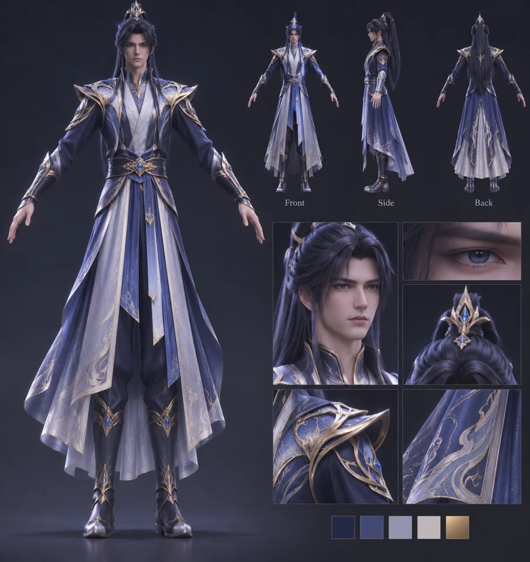
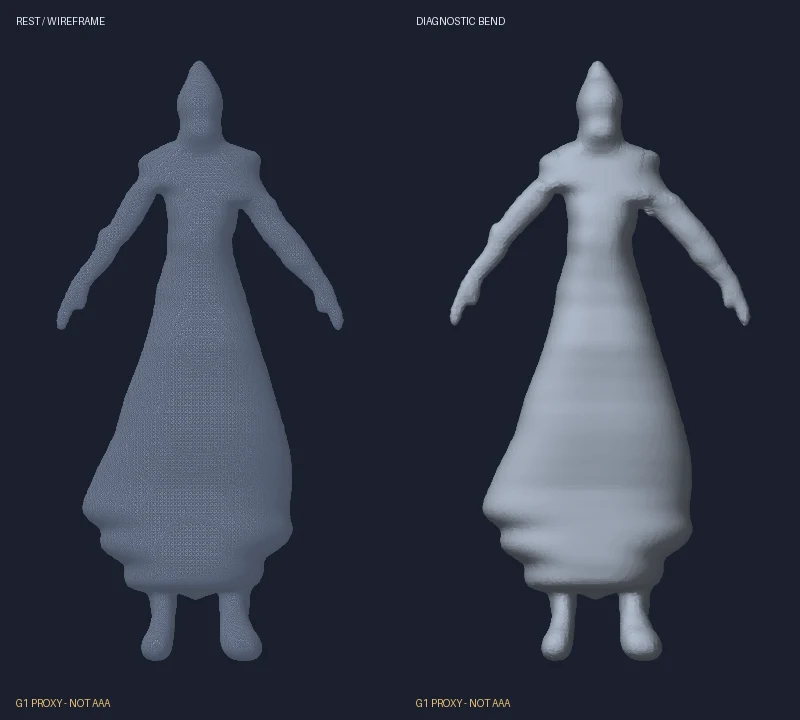

AAA Fantasy Character Studio / Case 01 / G1
Azure Celestial Sword Immortal
Reference-derived silhouette and diagnostic rig · Three.js review lab
PROTOTYPE — NOT AAA / NOT GAME-READY
ตัวอย่างการตรวจสอบ Quality Gate ที่ยังไม่ผ่าน G1: ไม่ใช่โมเดลที่เสร็จสมบูรณ์ ไม่มี anatomy, garment separation, UV, texture bake หรือ production rig.
ตัวอย่างการตรวจสอบ Quality Gate ที่ยังไม่ผ่าน G1: ไม่ใช่โมเดลที่เสร็จสมบูรณ์ ไม่มี anatomy, garment separation, UV, texture bake หรือ production rig.
Actual GLB · neutral clay
Static CPU-render evidence available. Loading viewer; runtime not previously verified.
Download actual GLB Binary QA JSONDesign target · concept only

56,992Triangles
28,498Vertices
29Inferred joints
1Diagnostic clip
Y-up · 1.925 m including crown · 1 skinned node · no UV/texture. These are measured from the export, not evidence of AAA quality.
Actual render evidence
Silhouette approximation only. The face, coat openings, limbs under the robe and hair are not independently reconstructed.

Quality gate findings
| Stage | Status | Reason |
|---|---|---|
| G0 reference | PARTIAL | Uncalibrated concept. No separate right/left profiles or independent approval. |
| G1 shape | FAIL | Fused coat and body, featureless head, missing layered garment and hair. |
| G2–G8 | BLOCKED | Credible anatomical base and Blender unavailable. UV and baking not performed. |
| G9 diagnostic only | NOT RUN | Skinning scaffold is a technical experiment; no production animation QA. |
| G10–G11 | BLOCKED | Binary checks only; no independent reviewer or measured engine benchmark. |
Full gate status · Reference and tool brief · Annotated silhouette · Reproducible source